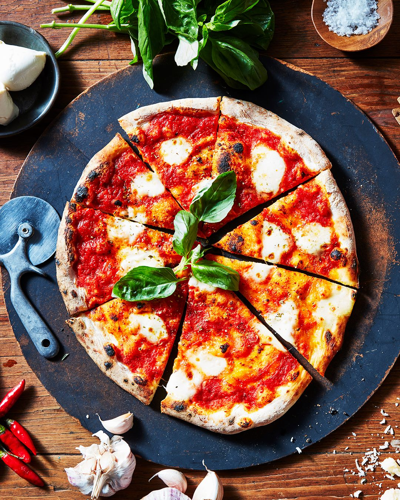

"Unveiling Flavors Through Time: The Epic Saga of Pizzaaaa!!"
Pizza, a beloved Italian dish, has ancient origins dating back to civilizations such as the Greeks and Egyptians who made flatbreads with various toppings. However, modern pizza as we know it, with tomato sauce and mozzarella cheese, was popularized in Naples, Italy, in the 18th century. The Margherita pizza, topped with tomato, mozzarella, and basil, is said to honor Queen Margherita of Italy. In the late 19th century, Italian immigrants introduced pizza to the United States, leading to its global popularity.
"Bringing Pizza to your kitchen"
Elevate Your Dish with Exceptional Ingredients
For the Pizza Dough:
1. 2 1/4 teaspoons active dry yeast
2. 1 teaspoon granulated sugar
3. 1 cup warm water (about 110°F or 43°C)
4. 2 1/2 cups all-purpose flour
5. 1 teaspoon salt
6. 2 tablespoons olive oil
For the Pizza Sauce:
7. 1 can (14 ounces) crushed tomatoes
8. 1 clove garlic, minced
9. 1 teaspoon dried oregano
10. 1/2 teaspoon dried basil
11. Salt and pepper to taste
For Toppings (customize to your preference):
12. 1 1/2 cups shredded mozzarella cheese
13. Sliced pepperoni, bell peppers, onions, mushrooms, olives, etc.
14. Fresh basil leaves (optional)
Let's chop, simmer, and sauté our way to gastronomic glory!
Prepare the Pizza Dough:
1. In a small bowl, combine warm water, sugar, and yeast. Let it sit for about 5-10 minutes until it becomes frothy.
2. In a large mixing bowl, combine flour and salt. Pour in the yeast mixture and olive oil.
3. Mix until a dough forms. Knead the dough on a floured surface for about 5-7 minutes until it becomes smooth and elastic.
4. Place the dough in an oiled bowl, cover it with a damp cloth, and let it rise in a warm place for about 1-2 hours or until it doubles in size.
Prepare the Pizza Sauce:
1. In a small saucepan, heat a tablespoon of olive oil over medium heat. Add minced garlic and sauté for about 30 seconds until fragrant.
2. Add the crushed tomatoes, dried oregano, dried basil, salt, and pepper. Simmer the sauce for about 10-15 minutes, stirring occasionally, until it thickens. Remove it from heat and let it cool.
Assemble and Bake the Pizza:
1. Preheat your oven to 475°F (245°C) or as high as it goes.
2. Punch down the risen dough and divide it into two portions for two 12-inch pizzas. Roll out each portion into a thin round circle on a floured surface.
3. Transfer the rolled-out dough to a pizza stone or a baking sheet lined with parchment paper.
4. Spread a thin layer of pizza sauce over the dough, leaving a border for the crust.
5. Sprinkle a generous amount of shredded mozzarella cheese over the sauce.
6. Add your choice of toppings, such as pepperoni, vegetables, or any other ingredients you like.
7. Bake in the preheated oven for 12-15 minutes or until the crust is golden and the cheese is bubbly and lightly browned.
8. Remove the pizza from the oven, let it cool slightly, and, if desired, garnish with fresh basil leaves.
9. Slice and serve hot.
Enjoy your homemade pizza! Feel free to get creative with the toppings and customize it to your taste.